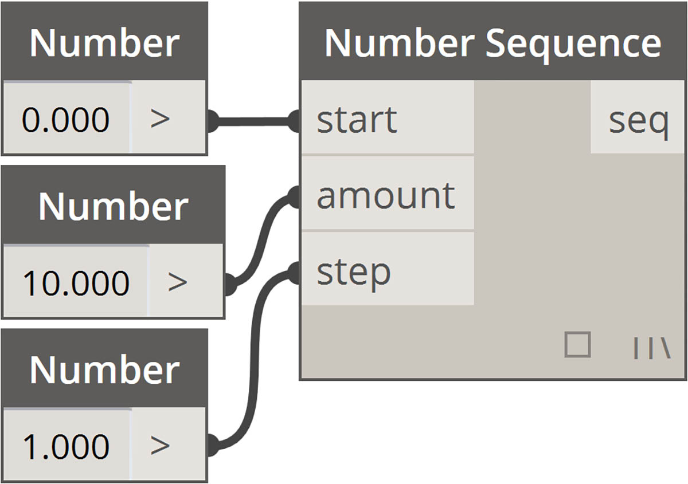
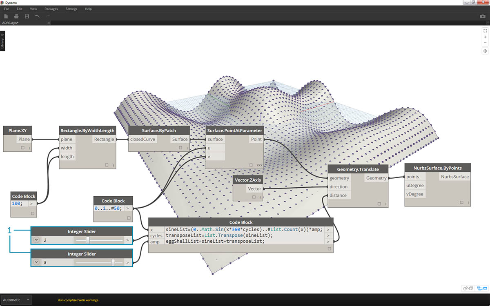
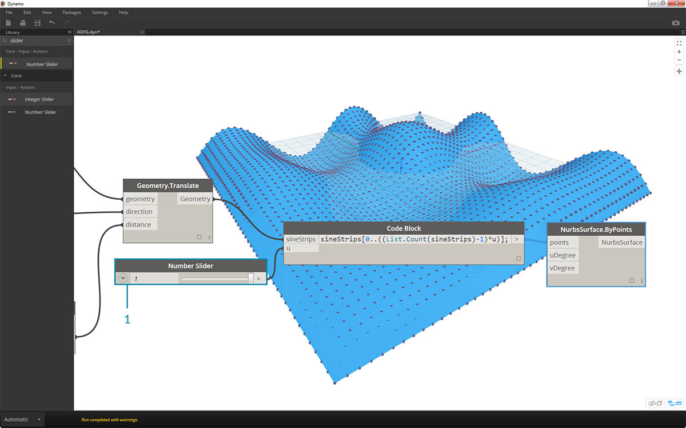

速寫
代碼區塊中提供了一些基本速寫方法，簡言之，這些方法可以顯著降低資料管理的難度。以下我們將分類講解基本知識，並討論如何使用此速寫來建立與查詢資料。
| 資料類型 | 標準 Dynamo | 代碼區塊等效 |
|---|---|---|
| 數字 |  |
 |
| 字串 |  |
 |
| 順序 |  |  |
| 範圍 |  |
 |
| 取得索引處的項目 |  |
 |
| 建立清單 |  |
 |
| 連接字串 |  |
 |
| 條件陳述式 |  |
 |
其他語法
| 節點 | 代碼區塊等效 | 註記 |
|---|---|---|
| 任何運算子 (+、&&、>=、Not，等等) | +、&&、>=、!，等等 | 請注意「Not」變為「!」但節點稱為「Not」以便與「Factorial」區分 |
| Boolean True | true； | 請注意小寫 |
| Boolean False | false； | 請注意小寫 |
範圍
定義範圍與序列的方法可以精簡為基本速寫。使用以下影像作為「..」語法的指南，以便使用代碼區塊定義一系列數字資料。瞭解此表現法後，建立數字資料就成為非常高效的程序：
- 在此範例中，數字範圍由定義
beginning..end..step-size;的基本代碼區塊語法所取代。以數字方式表示，可以取得0..10..1;- 請注意，語法
0..10..1;等效於0..10;。步長大小 1 是速寫符號的預設值。因此0..10;將產生從 0 至 10 且步長大小為 1 的序列。- 數字序列範例與此類似，只是我們使用「#」來說明希望清單包含 15 個值，而非清單中的值不超過 15。在此案例中，我們將定義：
beginning..#ofSteps..step-size:。序列的實際語法是0..#15..2- 使用上一步驟中的「#」，現在將其放置在語法的「步長大小」部分。現在，我們產生的數字範圍是從「起點」至「終點」，「步長大小」符號在起點與終點之間均勻分佈諸多值：
beginning..end..#ofSteps
進階範圍
藉由建立進階範圍，我們能以簡單方式使用清單的清單。在以下範例中，我們將隔離變數與主要範圍符號，並建立該清單的另一個範圍。
- 建立巢狀範圍，對含與不含「#」的符號進行比較。套用基本範圍內的相同邏輯，只是變得稍複雜一些。
- 可以在主要範圍內的任何位置定義子範圍，請注意我們可以有兩個子範圍。
- 透過控制範圍內的 「end」 值，我們可以建立長度不同的多個範圍。

作為邏輯練習，比較以上兩個速寫，並嘗試剖析子範圍與「#」符號如何產生結果輸出。
建立清單與取得清單中的項目
除了使用速寫建立清單外，我們也可以快速建立清單。這些清單可以包含多種元素類型，也可以進行查詢 (請記住，清單是其本身的物件)。總而言之，使用代碼區塊，您將使用「大括號」建立清單，並使用「中括號」查詢清單中的項目：

- 使用字串快速建立清單，並使用項目索引對清單進行查詢。
- 使用變數建立清單，並使用範圍速寫符號對清單進行查詢。
使用巢狀清單進行管理是類似的程序。請注意清單順序，並使用多組中括號進行召回：

- 定義清單的清單。
- 使用單邊括號對清單進行查詢。
- 使用雙邊括號對項目進行查詢。
練習
下載此練習隨附的範例檔案 (按一下右鍵，然後按一下「連結另存為...」)。附錄中提供範例檔案的完整清單。Obsolete-Nodes_Sine-Surface.dyn
在本練習中，我們將靈活運用新的速寫技能，以建立由範圍與公式定義的炫酷蛋殼曲面。在本練習中，請注意我們如何搭配使用代碼區塊與既有 Dynamo 節點：我們對處理大量資料的工作使用代碼區塊，而以視覺方式配置 Dynamo 節點以實現定義的易讀性。

首先，透過連接以上節點以建立曲面。不是使用數字節點來定義寬度與長度，而是按兩下圖元區，然後在代碼區塊中輸入
100;。

- 在代碼區塊中輸入
0..1..#50，以定義介於 0 至 1 之間且分為 50 份的範圍。- 將該範圍連接至 Surface.PointAtParameter，這會在曲面內為 u 與 v 指定介於 0 與 1 之間的值。請記住在 Surface.PointAtParameter 節點上按一下右鍵，以便將 Lacing 變更為 Cross Product。

在此步驟中，我們使用第一個函數在 Z 方向將點的網格上移。此網格將根據基本函數驅動產生的曲面。
- 加入視覺節點至圖元區，如以上影像所示。
- 我們不是使用公式節點，而是使用包含以下代碼行的代碼區塊：
(0..Math.Sin(x*360)..#50)*5;。為了快速詳細說明這一點，我們將定義內含公式的範圍。此方程式是正弦函數。正弦函數會接收 Dynamo 中輸入的角度，因此為了取得完整的正弦波形，我們將 x 值 (這是 0 到 1 的範圍輸入) 乘以 360。接下來，我們希望份數與每列的控制網格點數量相同，所以使用 #50 定義五十份。最後，乘數 5 只會增大轉換的幅度，以便我們能在 Dynamo 預覽中查看效果。

- 雖然上一個代碼區塊效果很好，但它並非完全是參數式方法。我們要動態驅動其參數，因此將使用
(0..Math.Sin(x*360*cycles)..#List.Count(x))*amp;取代上一個步驟中的代碼行。藉此我們能根據輸入定義這些值。

- 透過變更滑棒 (範圍從 0 到 10)，我們將取得一些有趣的結果。

- 透過對數量範圍執行轉置，我們將反轉帷幕波的方向：
transposeList = List.Transpose(sineList);

- 加入 sineList 與 tranposeList 後取得扭曲的蛋殼曲面：
eggShellList = sineList+transposeList;

- 再次變更滑棒，接下來我們停止此演算法的變動。

- 最後，我們使用代碼區塊查詢資料的隔離部分。若要重新產生具有特定範圍點的曲面，請在 Geometry.Translate 與 NurbsSurface.ByPoints 節點之間加入以上代碼區塊。這包括文字行：
sineStrips[0..15..1];。這將選取前 16 列的點 (從 50 個點中)。重新建立曲面，我們可以看到已產生點網格的隔離部分。

- 在最後一個步驟中，為了使此代碼區塊的參數式程度更高，我們使用範圍從 0 至 1 的滑棒來驅動該查詢。我們使用以下代碼行執行此作業：
sineStrips[0..((List.Count(sineStrips)-1)*u)];。這可能有些混亂，但使用該行代碼可以快速運用介於 0 和 1 之間的乘數來擴充清單長度。

- 若滑棒使用值 0.53，會建立剛好通過網格中點的曲面。

- 與預期一致，滑棒值使用 1 時，會從完整的點網格建立曲面。

查看產生的視覺圖表，我們可以亮顯代碼區塊，並查看其中的每項函數。
- 第一個代碼區塊將取代 Number 節點。
- 第二個代碼區塊將取代 Number Range 節點。
- 第三個代碼區塊將取代 Formula 節點 (以及 List.Transpose、List.Count 與 Number Range)。
- 第四個代碼區塊將查詢清單的清單，並取代 List.GetItemAtIndex 節點。